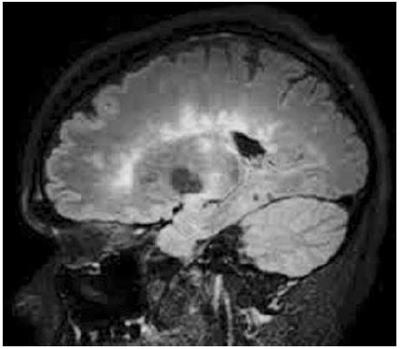
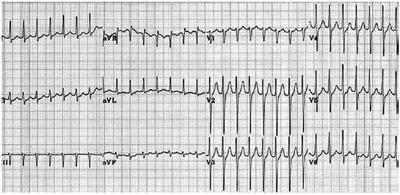

Questão 1 · Hipoglicemia · Def inição · Sinais e sintomas · 4000141075Recém-nascido, lho de mãe diabética, nascido a termo, de parto cesárea devido a macrossomia, com bolsa rota no momento do parto. Com 12 horas de vida, evolui com tremores, irritabilidade, convulsão clônica focal e reflexo de Moro exacerbado. A principal hipótese diagnóstica é:
A hipocalcemia.
B hipoglicemia.
C sepse neonatal precoce.
D hemorragia intracraniana.
E encefalopatia hipôxico-isquêmica.
Questão 2 · Diagnóstico · Pediatria · Sinais e sintomas · 4000141074Recém-nascido, lho de mãe sem pré-natal, nasceu de parto normal com 38 semanas de gestação, pequeno para a idade gestacional. Na maternidade, detectou-se a presença de persistência do canal arterial, o teste do reflexo vermelho apresentou opacidade bilateral e as emissões otoacústicas foram ausentes bilateralmente. Esses achados são sugestivos de qual infecção congênita?
A Toxoplasmose.
B Sífilis.
C Rubéola.
D Por citomegalovírus.
E Por herpes simplex.
Questão 3 · Urocultura · Def inição · Pediatria · 4000141073Menina de 4 anos apresenta febre e disúria, sem outros sintomas. Foi levada ao pronto-socorro, e o exame físico está normal. O plantonista solicitou urina tipo I. Em relação a esse exame e ao possível diagnóstico de infecção urinária, assinale a alternativa correta.
A Caso o exame apresente leucocituria, confirma-se o diagnóstico de infecção urinária, não sendo necessário a realização de urocultura.
B Se a esterase leucocitária vier negativa, afasta-se a possibilidade de infecção urinária, uma vez que esse exame possui alta sensibilidade e alto valor preditivo.
C A realização da bacterioscopia no exame de urina tipo I permite estabelecer o diagnóstico e o provável agente etiológico, não sendo necessário coleta de urocultura.
D Há alta probabilidade de ser infecção urinária, porém é importante colher urocultura por jato médio para confirmação.
E Não havia necessidade de coletar a urina tipo I, pois a presença de febre e disúria já indicam a necessidade de tratamento com antibiótico.
Questão 4 · Diagnóstico · Maturação sexual no sexo f eminino · Pediatria · 4000141072Adolescente do sexo feminino, com 14 anos de idade, está preocupada porque ainda não teve menarca. Não tem antecedentes patológicos. Ao exame físico, está eutró ca, com altura no escore-z entre 0 e +1, estadiamento puberal (Tanner) M3 P4, sem outros achados. A conduta indicada é:
A realizar ultrassonografia pélvica e dosagem de estrógeno e FSH.
B solicitar idade óssea e dosagem de GH.
C pedir ressonância magnética de crânio.
D solicitar cariótipo para descartar síndrome de Turner.
E tranquilizar a adolescente e reavaliar em 6 meses.
Revisar: possível letra faltando em enunciado
Questão 5 · Diagnóstico · 4000141071Menina de 5 anos, previamente hígida, dá entrada no pronto-socorro com 2 dias de febre, cefaleia e vômitos. Ao exame físico, está em regular estado geral, febril, com rigidez de nuca. O líquor colhido revelou: 180 leucócitos (30% neutró los, 60% linfócitos, 10% monócitos), 20 hemácias, proteína = 60 mg%, glicose = 70 mg%. A principal hipótese diagnóstica é:
A acidente de punção.
B encefalite herpética.
C meningite bacteriana.
D meningite viral.
E meningotuberculose.
Questão 6 · Rítmo Cardíaco · Pediatria · Terapia Farmacológica · 4000141070Menino de 1 ano dá entrada na sala de emergência, trazido pela equipe do SAMU, em parada cardiorrespiratória. Iniciada massagem cardíaca, ventilação e acesso vascular. A monitorização mostra assistolia. A seguir, a conduta mais adequada é:
A realizar cardioversão eletríca.
B administrar epinefrina 0,01 mg/kg.
C administrar atropina 0,02 mg/kg.
D iniciar expansão com 20 mL/kg de solução fisiológica.
E infundir bicarbonato de sódio na dose de 1 mEq/kg.
Questão 7 · Aspectos Clínicos · Diagnósticos dif erenciais · Pediatria · 4000141069Menina de 9 meses foi levada ao pronto-socorro com história de febre alta (39ºC), inapetência e irritabilidade, sem outras queixas. Como estava em bom estado geral, com exame físico normal e hemograma sem alterações, foi orientado uso de antitérmico e retorno no caso de haver sinais de alerta. Retorna após 4 dias devido aparecimento de lesões avermelhadas pelo corpo, apesar de ter cado afebril nas últimas 24 horas. O exame físico atual revela exantema maculopapular róseo em tronco, pescoço e braços, sem outras alterações. A principal hipótese diagnóstica é:
A farmacodermia devido ao uso do antitérmico.
B sarampo.
C rubéola.
D escarlatina.
E exantema súbito.
Revisar: possível letra faltando em enunciado
Questão 8 · Soro de reidratação oral · Pediatria · Plano B · 4000141068Lactente de 1 ano é levado ao pronto-socorro com história de vômitos, diarreia líquida, sem sangue, muco ou pus há 3 dias. A mãe refere que está urinando muito pouco e aceitando mal a alimentação. Ao exame, encontra-se com mucosa oral seca, enchimento capilar de 4 segundos, frequência cardíaca de 150 bpm. A conduta adequada nesse momento é:
A prescrever expansão com ringer lactato 20 mL/kg.
B realizar hidratação intravenosa com soro fisiológico 50 mL/kg.
C iniciar terapia de reidratação oral na sala de observação, com soro de reidratação oral.
D administrar antiemético intramuscular e prescrever soro de reidratação oral e probiótico.
E prescrever soro de reidratação oral intercalado com outros líquidos e orientar retorno, se necessário.
Questão 9 · Síndrome nef rótica · Nef rologia · 4000141067Menina de 3 anos, previamente hígida, apresenta edema de face há 3 dias, com piora progressiva, acompanhada de mal- estar, dor abdominal e inapetência. Mãe nega febre ou outros sintomas. Ao exame físico, está em regular estado geral, corada, desidratada +/4, afebril, taquipneica leve, com edema periorbitário 2+/4 e pressão arterial de 80 x 40 mmHg. Auscultas pulmonar e cardíaca normais. Abdome: globoso, ácido, com fígado palpável a 2 cm do rebordo costal direito, ascite +/4. Restante do exame normal. A análise do sedimento urinário revelou pH = 5,5, densidade de 1 020, glicose ausente, proteína 2+/4, eritrócitos = 10 mil/mm3, leucócitos = 15 mil/mm3, cilindros +/4, nitrito negativo. A principal suspeita diagnóstica é:
A insuficiência cardíaca congestiva.
B insuficiência hepática aguda.
C glomerulonefrite difusa aguda.
D síndrome nefrótica.
E infecção do trato urinário.
Questão 10 · Síndrome do Bebê Chacoalhado · 4000141066Menino de 2 meses, previamente hígido, dá entrada no pronto-socorro apresentando crise convulsiva há 20 minutos. Esse foi o primeiro episódio. Os pais negam febre ou outros sintomas. Ao exame físico, está em mau estado geral, sonolento, afebril, com frequência cardíaca de 160 bpm, frequência respiratória de 40 ipm, Glasgow = 10. Fundo de olho com presença de hemorragia retiniana. Sem outras alterações. A principal hipótese diagnóstica é:
A síndrome de West.
B reação pós-vacinal.
C meningoencefalite herpética.
D síndrome do bebê sacudido.
E sífilis congênita.
Questão 11 · Pediatria · Clínico · 4000141065Criança de 4 anos apresenta crises de sibilância desde os 4 meses de idade. Atualmente as crises se tornaram mais frequentes, desencadeadas por infecções respiratórias, por contato com poeira ou por atividade física, e melhoram com inalação com broncodilatador. No exame físico, a ausculta pulmonar está normal, apresentando apenas eczema em fossas poplíteas e cubital bilateralmente. A principal hipótese diagnóstica é:
A sibilância pós-viral.
B asma de início precoce.
C fibrose cística.
D aspiração de corpo estranho.
E alergia ao leite de vaca.
Questão 12 · Pediatria · Tratamento · 4000141064Lactente de 3 meses, nascido de parto normal, iniciou há 20 dias com tosse, coriza e febre baixa. Evolui com melhora da febre, porém com piora da tosse, caracterizada por acessos súbitos de tosse seca, acompanhados por cianose perioral e vômitos. Apresenta hemograma com linfocitose e a radiografia de tórax com infiltrado para-cardíaco bilateral. De acordo com a principal suspeita etiológica, o tratamento deve ser com:
A corticoide oral e inalações com broncodilatador.
B oseltamivir.
C penicilina cristalina.
D ceftriaxone.
E claritromicina.
Questão 13 · Crianças e adolescentes · Crianças e adolescentes · 4000141063Menino de 8 anos, previamente hígido, há 1 semana vem apresentando mal-estar e inapetência, aceitando apenas grande quantidade de líquidos. Há 3 dias com dor abdominal, com piora progressiva, acompanhada de náuseas e vômitos. Mãe nega febre e diarreia. Ao exame de admissão no pronto-socorro, encontra-se em regular estado geral, desidratado 3+/4, taquicárdico e taquipneico. Ausculta pulmonar e cardíaca normais, abdome plano, doloroso difusamente com descompressão brusca negativa. De acordo com a principal hipótese, os exames iniciais que devem ser solicitados são:
A hemograma e hemocultura.
B líquor, glicemia, hemograma e hemocultura.
C glicemia, gasometria venosa e eletrólitos.
D amilase sérica e tomografia de abdome.
E tomografia de abdome, hemograma e hemocultura.
Questão 14 · 10 meses · Pediatria · Avaliando o desenvolvimento · 4000141062Menina de 10 meses é trazida para consulta de puericultura. A única preocupação materna é em relação ao comportamento de sua lha. Diz que ela sempre foi uma criança calma e tranquila, mas no último mês ela chora na presença de estranhos e quer car no colo da mãe. Ela senta sem apoio, ca em pé com apoio, mas ainda não engatinha e não anda. Fala apenas “mama” para chamar a mãe e outras sílabas sem sentido. No consultório, ela chorou bastante, mas se acalmou no colo da mãe e brincou de esconde-achou. Quando o médico lhe ofereceu a espátula, ela olhou primeiro para a mãe e depois pegou em movimento de pinça e levou o objeto à boca. Em relação ao desenvolvimento neuropsicomotor, pode- -se afirmar, corretamente, que
A está normal para a idade.
B o comportamento está normal, mas ela tem atraso motor porque ainda não engatinha.
C há um provável problema emocional e a criança apresenta sinais de apego inseguro.
D a linguagem está atrasada, uma vez que ela fala apenas uma palavra com significado.
E a criança deve ser encaminhada para o neuropediatra, pois apresenta um atraso global.
Questão 15 · Intoxicação por Paracetamol Acetaminof eno · Hepatite medicamentosa · 4000141061Menino de 2 anos deu entrada no pronto-socorro após ter ingerido um frasco de paracetamol. O pediatra de plantão deverá estar atento para o risco de a criança apresenta
A sinais de hepatotoxicidade.
B hemólise maciça.
C depressão respiratória.
D coma.
E sintomas de liberação extrapiramidal.
Questão 16 · Avaliação do Crescimento · Pediatria · 4000141060Menino de 6 meses, hígido, em aleitamento materno exclusivo, está em consulta de puericultura. Nasceu a termo, de parto normal, com peso de 3 300 gramas, comprimento de 50 cm e perímetro cefálico de 34 cm. Considerando- se os parâmetros esperados de ganho pôndero-estatural e de aumento de perímetro cefálico, é esperado que na consulta atual ele apresente, aproximadamente,
A peso 5 kg e comprimento de 60 cm.
B peso de 10 kg e perímetro cefálico de 40 cm.
C comprimento de 65 cm e perímetro cefálico de 43 cm.
D comprimento de 75 cm e perímetro cefálico de 46 cm.
E peso de 9 kg, comprimento de 70 cm e perímetro cefálico de 45 cm.
Questão 17 · Pediatria · Indicações · 4000141059Os pais de um bebê de 5 meses estão preocupados porque ele teve contato, há 2 dias, com criança que teve diagnóstico confirmado de sarampo. O bebê está bem, assintomático e com as vacinas em dia. A conduta preconizada é:
A aplicar a vacina de sarampo imediatamente.
B administrar imunoglobulina o mais precoce possível, até 6 dias após o contato.
C prescrever imunoglobulina apenas se apresentar sintomas.
D manter em observação clínica rigorosa e em isolamento.
E tranquilizar os pais, pois a criança tem a vacinação em dia.
Questão 18 · Quadro clínico da anemia f erropriva · 4000141058Menina de 18 meses, previamente hígida, é trazida para a consulta na Unidade Básica de Saúde. A menor era institucionalizada e foi adotada há 2 meses. A mãe adotiva relata que a menor iniciou há 1 mês com quadro de tosse, febre baixa e inapetência e que foi levada a um pronto-socorro, no qual realizaram radiografia de tórax e prescreveram amoxicilina 50 mg/kg/dia, durante 10 dias, para quadro de pneumonia. O antibiótico terminou há 14 dias, porém a criança continua sintomática. Ao exame físico, está em regular estado geral, emagrecida, descorada +/4, levemente taquipneica, sem desconforto respiratório, com frequência cardíaca de 110 bpm e afebril. Apresenta gânglio cervical de 2 cm de diâmetro. Ausculta pulmonar com roncos e estertores subcrepitantes difusos. Ausculta cardíaca e abdome sem alterações. Recebeu as seguintes vacinas, de acordo com a caderneta de vacinação: BCG e hepatite B ao nascimento, 3 doses de pentavalente e VIP com 2, 4 e 6 meses, 2 doses de pneumocócica 10-valente e 2 doses de meningocócica conjugada tipo C com 3 e 5 meses. Exames realizados no início do quadro: radiografia de tórax apresenta condensação em lobo médio e hemograma: Hb = 10,1 g/dL, Ht = 30%, volume corpuscular médio (VCM) = 68 28 g/dL, coe ciente de variação do volume eritrocitário (RDW) = 18%, leucócitos = 10 200 (3% bastonetes, 56% segmentados, 3% eosinófilos, 2% monócitos, 36% linfócitos), plaquetas = 390 000/mm3. Antes da adoção, foram realizadas as sorologias para HIV, sífilis e hepatite C, todas negativas. De acordo com os dados clínicos e hematimétricos, a principal hipótese é de
A anemia falciforme.
B anemia ferropriva.
C anemia hemolítica autoimune.
D anemia associada ao quadro infeccioso.
E leucemia linfoblástica aguda.
Revisar: possível letra faltando em enunciado
Questão 19 · Pediatria · Laboratório · Sistema de Pontuação · 4000141057Menina de 18 meses, previamente hígida, é trazida para a consulta na Unidade Básica de Saúde. A menor era institucionalizada e foi adotada há 2 meses. A mãe adotiva relata que a menor iniciou há 1 mês com quadro de tosse, febre baixa e inapetência e que foi levada a um pronto-socorro, no qual realizaram radiografia de tórax e prescreveram amoxicilina 50 mg/kg/dia, durante 10 dias, para quadro de pneumonia. O antibiótico terminou há 14 dias, porém a criança continua sintomática. Ao exame físico, está em regular estado geral, emagrecida, descorada +/4, levemente taquipneica, sem desconforto respiratório, com frequência cardíaca de 110 bpm e afebril. Apresenta gânglio cervical de 2 cm de diâmetro. Ausculta pulmonar com roncos e estertores subcrepitantes difusos. Ausculta cardíaca e abdome sem alterações. Recebeu as seguintes vacinas, de acordo com a caderneta de vacinação: BCG e hepatite B ao nascimento, 3 doses de pentavalente e VIP com 2, 4 e 6 meses, 2 doses de pneumocócica 10-valente e 2 doses de meningocócica conjugada tipo C com 3 e 5 meses. Exames realizados no início do quadro: radiografia de tórax apresenta condensação em lobo médio e hemograma: Hb = 10,1 g/dL, Ht = 30%, volume corpuscular médio (VCM) = 68 28 g/dL, coe ciente de variação do volume eritrocitário (RDW) = 18%, leucócitos = 10 200 (3% bastonetes, 56% segmentados, 3% eosinófilos, 2% monócitos, 36% linfócitos), plaquetas = 390 000/mm3. Antes da adoção, foram realizadas as sorologias para HIV, sífilis e hepatite C, todas negativas. Em relação ao quadro pulmonar, a conduta médica na consulta de hoje deve ser:
A prescrever amoxicilina-clavulanato para cobrir agentes produtores de beta-lactamase.
B prescrever cefalexina, para cobertura de estafilococos.
C encaminhar para internação hospitalar para receber antibioticoterapia parenteral.
D solicitar teste tuberculínico e retorno precoce para reavaliação.
E prescrever corticoide oral, inalações com beta-2 adrenérgico e repetir radiografia de tórax.
Revisar: possível letra faltando em enunciado
Questão 20 · Vacinas meningocócicas · Indicação · Vacina pneumo 10valente · 4000141056Menina de 18 meses, previamente hígida, é trazida para a consulta na Unidade Básica de Saúde. A menor era institucionalizada e foi adotada há 2 meses. A mãe adotiva relata que a menor iniciou há 1 mês com quadro de tosse, febre baixa e inapetência e que foi levada a um pronto-socorro, no qual realizaram radiografia de tórax e prescreveram amoxicilina 50 mg/kg/dia, durante 10 dias, para quadro de pneumonia. O antibiótico terminou há 14 dias, porém a criança continua sintomática. Ao exame físico, está em regular estado geral, emagrecida, descorada +/4, levemente taquipneica, sem desconforto respiratório, com frequência cardíaca de 110 bpm e afebril. Apresenta gânglio cervical de 2 cm de diâmetro. Ausculta pulmonar com roncos e estertores subcrepitantes difusos. Ausculta cardíaca e abdome sem alterações. Recebeu as seguintes vacinas, de acordo com a caderneta de vacinação: BCG e hepatite B ao nascimento, 3 doses de pentavalente e VIP com 2, 4 e 6 meses, 2 doses de pneumocócica 10-valente e 2 doses de meningocócica conjugada tipo C com 3 e 5 meses. Exames realizados no início do quadro: radiografia de tórax apresenta condensação em lobo médio e hemograma: Hb = 10,1 g/dL, Ht = 30%, volume corpuscular médio (VCM) = 68 28 g/dL, coe ciente de variação do volume eritrocitário (RDW) = 18%, leucócitos = 10 200 (3% bastonetes, 56% segmentados, 3% eosinófilos, 2% monócitos, 36% linfócitos), plaquetas = 390 000/mm3. Antes da adoção, foram realizadas as sorologias para HIV, sífilis e hepatite C, todas negativas. Em relação às vacinas, assinale a alternativa correta.
A Estão indicadas 2 doses de vacina contra rotavírus, com 2 meses de intervalo entre elas.
B Devido ao risco epidemiológico, na consulta de hoje deve receber as vacinas contra sarampo-caxumba- -rubéola e a vacina contra febre amarela.
C Falta receber as doses de reforço da pneumocócica 10-valente e da meningocócica conjugada.
D Como já tem mais de 1 ano de idade, a vacina contra sarampo-caxumba-rubéola e varicela pode ser dada em dose única, sem necessidade de reforço.
E Antes de receber as vacinas atrasadas, deve realizar sorologias para que se identifique quais serão necessárias.
Revisar: possível letra faltando em enunciado
Questão 21 · Índices de Atividade na Retocolite Ulcerativa · Retocolite Ulcerativa · 4000141055Paciente de 29 anos, feminina, portadora de retocolite ulcerativa com queixa de diarreia, sangue, muco e perda de peso, em uso de mesalazina, doses baixas de corticoide e azatioprina e, mesmo com otimização das drogas mencionadas, não tem conseguido melhora clínica. Já teve 2 internações prévias por descompensação clínica. Atualmente, está com fortes dores abdominais, diarreia com frequência de 6 evacuações ao dia, muco nas fezes, náuseas e vômitos frequentes, dores articulares. Colonoscopia atual demonstra pancolite – (Mayo 2) com calprotectina fecal de 2 400 e PCR de 14,5. Diante deste caso, a melhor opção terapêutica é
A aumentar corticoide, manter demais drogas e associar metrotrexate.
B substituir mesalazina por sulfasalazina e aumentar azatioprina.
C devido à refratariedade da doença, iniciar uso de terapia biológica em mono e/ou em comboterapia inicialmente.
D retirar corticoides, retirar mesalazina e deixar ciclosporina em monoterapia.
E retirar todas as drogas e indicar cirurgia curativa de colectomia total com bolsa ileal (J- pouch).
Questão 22 · Diagnóstico · Manif estações Clínicas · 4000141054A respeito da doença diverticular dos cólons, assinale a alternativa correta.
A O uso de corticosteroides está associado ao maior risco de perfuração e complicações sépticas.
B O número de relatos de casos de diverticulite está diminuindo em todo o mundo.
C Na maior parte dos pacientes acometidos por essa doença, a presença de divertículos está associada à diminuição da pressão intraluminal dos cólons.
D A ocorrência de diverticulite está associada à maior ingestão de grãos e sementes.
E O reto é o local mais comum de aparecimento de divertículos adquiridos, logo em seguida ao sigmoide.
Questão 23 · Adenocarcinoma · 4000141053Paciente masculino de 59 anos, com queixa de dores abdominais e diarreia com saída de sangue nas fezes, associadas à perda ponderal e dores retais, realizou colonoscopia, que evidenciou lesão ulcerada e vegetante em reto distal, a cerca de 5 cm da borda anal, com diagnóstico de adenocarcinoma de reto distal na biópsia. Considerando que o estadiamento tenha revelado ser um adenocarcinoma T3N1M0, neste sentido, a melhor estratégia terapêutica é:
A amputação de reto sem neoadjuvância.
B quimio e radioterapia seguida de ressecção cirúrgica da lesão e, a seguir, quimio adjuvante.
C radioterapia exclusiva (
D colostomia derivativa e quimioterapia paliativa.
E quimioterapia neoadjuvante, ressecção cirúrgica e, após cirurgia, realizar radioterapia.
Questão 24 · Cirurgia · Câncer do Canal Anal · 4000141052Paciente masculino de 59 anos, com queixa de dores abdominais e diarreia com saída de sangue nas fezes, associadas à perda ponderal e dores retais, realizou colonoscopia, que evidenciou lesão ulcerada e vegetante em reto distal, a cerca de 5 cm da borda anal, com diagnóstico de adenocarcinoma de reto distal na biópsia. Diante do quadro, a melhor opção de estadiamento é:
A CEA, CA 19,9, TC de tórax e TC de abdome superior.
B Ressonância Magnética de pelve e abdome superior, TC de tórax, CEA e CA 19,9.
C CA 125, CA 19,9, Us de abdome superior e TC de tórax.
D TC de Crânio, PET SCAN e marcador tumoral na urina de 24 horas.
E TC de crânio e TC de tórax.
Questão 25 · Traumatismo Duodenal e Pancreático · Cirurgia · 4000141051O pseudocisto de pâncreas pode ser uma complicação após um trauma pancreático que pode comprimir estruturas extrínsecas e/ou diminuir tempo de esvaziamento gástrico. Frente a um quadro de pseudocisto após trauma pancreático e que tenha indicação cirúrgica, a forma menos invasiva e que trata de forma definitiva o quadro é:
A Laparotomia exploradora com anastomose pseudocisto- jejunal em Y de Roux.
B Punção guiada por radiologia Intervencionista e drenagem.
C Derivação pseudocisto-gástrica aberta convencional.
D Derivação pseudocisto-gástrica via endoscópica com
E Derivação pseudocisto com cólon transverso.
Questão 26 · Traumatismo Duodenal e Pancreático · Cirurgia · 4000141050Paciente do sexo masculino de 40 anos, morador de rua, usuário de drogas, foi encontrado em via pública, vítima de agressão física, com diversos golpes de socos e chutes na região do abdome superior e epigástrio. Foi atendido pelo SAMU e levado ao pronto-socorro sob protocolo ATLS, com vias aéreas pérvias, ausculta pulmonar sem alterações, PA 130 x 80 mmHg, FC = 89 bat/min, abdome plano, doloroso, sem sinais de peritonite. Exames laboratoriais com HB 12,0 e Amilase de 420. Foi, então, submetido a uma tomogra a de abdome total, que identi cou uma laceração entre a cabeça e o corpo do pâncreas, com lesão parenquimatosa e transecção distal, com lesão do ducto pancreático principal. Se fosse documentada uma lesão parcial do ducto pancreático principal, com paciente sem peritonite, e mantendo estabilidade, a melhor opção terapêutica, neste momento, seria
A pancreatectomia caudal.
B pancreatectomia total.
C CPRE para tentativa de passagem de prótese endoscópica e canalização da lesão.
D gastroduodenopancreatectomia (cirurgia de Whipple).
E anastomose da alça de delgado junto ao ducto pancreático principal.
Questão 27 · Traumatismo Duodenal e Pancreático · Cirurgia · 4000141049Paciente do sexo masculino de 40 anos, morador de rua, usuário de drogas, foi encontrado em via pública, vítima de agressão física, com diversos golpes de socos e chutes na região do abdome superior e epigástrio. Foi atendido pelo SAMU e levado ao pronto-socorro sob protocolo ATLS, com vias aéreas pérvias, ausculta pulmonar sem alterações, PA 130 x 80 mmHg, FC = 89 bat/min, abdome plano, doloroso, sem sinais de peritonite. Exames laboratoriais com HB 12,0 e Amilase de 420. Foi, então, submetido a uma tomogra a de abdome total, que identi cou uma laceração entre a cabeça e o corpo do pâncreas, com lesão parenquimatosa e transecção distal, com lesão do ducto pancreático principal. Frente ao caso descrito, segundo a classificação da deste paciente pode ser classificado como trauma grau
A I.
B II.
C III.
D IV.
E V.
Questão 28 · Tratamento do Adenocarcinoma Gástrico · 4000141048Paciente de 53 anos de idade, masculino, com perda de peso e emagrecimento, com sinais e sintomas de empachamento e dispepsia, foi submetido à endoscopia alta, que demonstrou lesão ulcerada e de aspecto tumoral em região de corpo gástrico proximal, com extensão de cerca de 5 cm na pequena curvatura. A biópsia evidenciou ser um adenocarcinoma e, nos exames de estadiamento, revelou se tratar de uma lesão T3N1M0, sem focos de doenças em outros órgãos. Neste caso, a melhor opção cirúrgica é:
A gastrectomia subtotal com linfadenectomia a D1.
B gastrectomia total com linfadenectomia a D3.
C esofagectomia com gastrectomia e reconstrução em Y de Roux.
D gastrectomia subtotal e linfadenectomia a D2.
E apenas derivação com gastroenteroanastomose.
Questão 29 · Sintomas e Investigação Diagnóstica · Adenocarcinoma de Esôf ago · 4000141047Os principais fatores de risco para o adenocarcinoma esofágico são
A tabagismo e etilismo.
B megaesôfago e tilose palmoplantar.
C doença do refluxo crônica e esôfago de Barrett.
D ingestão de substâncias quentes e idade avançada.
E antecedentes de neoplasias de orofaringe e laringe.
Questão 30 · Conceitos Básicos e Complicações em Cirurgia Laparoscópica · 4000141046Pode ser considerada uma contraindicação à realização de uma cirurgia videolaparoscópica:
A asma brônquica.
B cirurgia abdominal prévia.
C idade maior do que 65 anos.
D obesidade.
E doença cardiovascular restritiva importante.
Questão 31 · Cirurgia · Traumatismo dos Grandes Vasos Abdominais · 4000141045Em relação aos hematomas traumáticos de retroperitônio, assinale a alternativa correta.
A Hematoma em Zona 1 nunca deve ser explorado.
B Hematoma em Zona 3 sempre deve ser explorado.
C Hematomas em Zona 2 nunca devem ser explorados.
D Zonas 1 e 3 sempre explorar pelo risco iminente de hemorragia grave.
E Hematomas em Zona 1 sempre devem ser explorados.
Questão 32 · Trauma Abdominal Fechado · Cirurgia · 4000141044Paciente 32 anos, masculino, vítima de politrauma, evento carro x carro em rodovia, sem cinto de segurança, chega ao hospital com colar e prancha, com vias aéreas prévias, ausculta pulmonar preservada, PA 130 x 90 mmHg e FC 87 bat/min. Pulsos preservados e bacia estável. Dor abdominal à palpação e hematoma na região, com US FAST positivo em loja esplenorrenal (hipocôndrio esquerdo). A conduta correta é:
A Tomografia de abdome total com contraste EV.
B Analgesia e observação por 24h.
C Lavado peritoneal diagnóstico e, se positivo, indicar laparotomia exploradora.
D Devido ao FAST positivo e mecanismo de trauma, indicar laparotomia exploradora.
E Devido ao FAST positivo, indicar videolaparoscopia diagnóstica.
Questão 33 · Classif icação em Subtipos · Diagnóstico · 4000141043Faz parte da classificação de Roma IV. para o fechamento do diagnóstico da síndrome do intestino irritável:
A Dor abdominal recorrente ao menos uma vez por semana, nos últimos 3 meses.
B Diarreia e vômitos pelo menos uma vez na semana, nos últimos 3 meses.
C Sangue retal associado à distensão, pelo menos um episódio no último mês.
D Três ou mais evacuações por dia com muco nas fezes.
E Perda ponderal com diarreia e/ou constipação nos últimos 6 meses.
Questão 34 · Abdome Agudo Obstrutivo · Cirurgia · Hérnia Diaf ragmática Congênita · 4000141042Paciente de 30 anos de idade, masculino, sem patologias prévias, chega à sala de emergência com fortes dores abdominais e intenso desconforto respiratório, com saturação de 83% e FR = 27 incursões por min., com distensão abdominal importante, com suspeita de peritonite e sinais clínicos sugestivos de abdome agudo obstrutivo. Realizado raio X de tórax e de abdome agudo, que evidenciou grande opaci cação em hemitórax à esquerda, com elevação da cúpula diafragmática à esquerda e níveis hidroaéreos em topografia de hemitórax à esquerda. Sobre o relato, pode-se afirmar que se trata, possivelmente, de
A pneumonia extensa à esquerda.
B pneumotórax espontâneo secundário a bleb.
C hemotórax à esquerda secundário a provável trauma fechado.
D lesão pleural à esquerda com hemotórax.
E hérnia diafragmática congênita crônica agudizada.
Questão 35 · Tratamento · Retocolite Ulcerativa · Tratamento Cirúrgico das Doenças Inf lamatórias Intestinais · 4000141041Paciente de 29 anos, masculino, desde 2015 com dores abdominais, diarreia, muco e sangue nas fezes, realizou colonoscopia, que evidenciou se tratar de uma retocolite ulcerativa. Iniciou uso de Mesalazina sem grandes melhoras, sendo necessário uso esporádico de prednisona. Há 01 mês, teve quadro de abdome agudo perfurativo com peritonite, sendo submetido à laparotomia de urgência com sigmoide com grandes áreas de in amação ativa com perfuração e abscesso (retocolite aguda grave perfurada). Foi realizada colostomia proximal com sepultamento do coto retal distal (Hartman). Após sua recuperação e agora, nos controles ambulatoriais, é correto afirmar que
A a melhor estratégia terapêutica é otimizar toda a terapia convencional e altas doses de corticoide como manutenção.
B a melhor estratégia terapêutica é dose máxima de mesalazina e azatioprina.
C a melhor estratégia terapêutica é terapia biológica (anti tnf-alfa) inicialmente em comboterapia com azatiorpina.
D a melhor estratégia terapêutica é metrotrexate e corticoides em doses imunossupressoras.
E devido a cirurgia já ter realizado a ressecção do local de maior inflamação, não se faz necessário manter drogas de manutenção com efeitos colaterais altos.
Questão 36 · Tratamento das Metástases Hepáticas do CCR · 4000141040Assinale a alternativa correta.
A As lesões metastáticas do fígado têm como origem, em sua grande maioria, os tumores primários de estômago, com uma taxa de sobrevida de 2% em 5 anos.
B A neoplasia de pâncreas é a que mais desenvolve metástase hepática, chegando a 90% dos casos de metástase de fígado.
C O câncer de mama, hoje, representa as maiores taxas de lesões metastáticas para o fígado.
D As lesões metastáticas do fígado têm como origem, em sua grande maioria, os tumores provenientes do colón e do reto e apresentam uma taxa média de sobrevida de 50% em 5 anos após hepatectomia.
E Os hepatocarcinomas têm diminuído sua incidência e não guardam relação com os quadros cirróticos e de hepatite prévia.
Questão 37 · Hepatologia · O f ígado anatomia e histologia · 4000141039Paciente jovem do sexo feminino, em uso de anticoncepcional, desenvolve dores intensas na região de hipocôndrio direito, com distensão abdominal e anemia. Na tomogra a, identi ca-se grande lesão hepática, sugestiva de adenoma gigante, envolvendo todo o lobo hepático esquerdo. O cirurgião de fígado foi consultado e indicou realização de hepatectomia esquerda clássica. Neste aspecto, do ponto de vista anatômico, os segmentos que serão ressecados em uma hepatectomia esquerda são:
A III, IVa e VII.
B II, III, IVa e IVb.
C I, II e III.
D IVb, V e VII.
E V, VII e VIII.
Revisar: possível letra faltando em enunciado
Questão 38 · Anatomia Vascular do Trato Gastrointestinal · Cirurgia · 4000141038O tronco celíaco é formado pela junção dos seguintes vasos:
A artéria gástrica esquerda + artéria hepática comum + artéria esplênica.
B artéria gástrica direita + ducto cístico + veia esplênica.
C artéria gastroduodenal direita + artéria hepática esquerda + artéria esplênica.
D artéria gástrica direita + ramo da artéria hepática direita + gastroduodenal direita.
E artéria mesentérica superior + ramo da hepática esquerda + artéria esplênica.
Questão 39 · Tratamento das Hérnias Inguinais · Cirurgia · 4000141037A técnica de correção de hérnia inguinal que pode ser considerada com tensão e apresenta maior índice de recidiva é a técnica de
A Lichestein.
B Shouldice.
C Bassini.
D videolaparoscopia (TAAP).
E videolaparoscopia (TEP).
Questão 40 · Tratamento · Cirurgia · 4000141036Paciente de 32 anos de idade, sexo masculino, com dores em fossa ilíaca direita, febre, mal-estar há cerca de 4 dias, relatando disúria e di culdades evacuatórias desde o início dos sintomas, procurou o pronto-socorro onde realizou um ultrassom de abdome, revelando ter abscesso em goteira parietocólica direita e sinais de apendicite aguda. Foi, então, submetido à cirurgia convencional com incisão mediana infraumbilical. Durante a cirurgia, observou-se, na cavidade, intenso bloqueio inflamatório com abscesso localizado junto ao ceco, com necrose e perfuração da ponta do apêndice; também notou- se base do apêndice com áreas de isquemia junto à parede do ceco. Nesta situação, a melhor estratégia cirúrgica é
A apendicectomia convencional clássica com Bolsa de Oschner e drenagem cavidade.
B apendicectomia convencional com técnica de Parker Kerr sem drenagem.
C apendicectomia com a técnica de ligadura da base sem invaginação (técnica do professor Alípio Correa Neto).
D ileotiflectomia com íleo – ascendente anastomose com drenagem.
E colectomia direita ampliada com ileostomia de proteção.
Questão 41 · Obstetrícia · Gestação múltipla gestação gemelar · 4000141035Em uma gestação gemelar dicoriônica e diamniótica, a avaliação ultrassonográ ca da quantidade normal de líquido amniótico será mais bem definida quando o
A índice de líquido amniótico (ILA) for maior que 3 cm em ambas as cavidades amnióticas.
B índice de líquido amniótico (ILA) for maior que 8 cm em uma das cavidades amnióticas.
C índice de líquido amniótico (ILA) for maior que 10 cm em ambas as cavidades amnióticas.
D maior bolsão (MB) de líquido amniótico for maior que 2 cm em ambas as cavidades amnióticas.
E maior bolsão (MB) de líquido amniótico for maior que 5 cm em ambas as cavidades amnióticas.
Revisar: possível letra faltando em enunciado
Questão 42 · Parto · 4000141034Assinale a alternativa correta, sobre gestante primigesta, no termo, portadora de vírus da imunodeficiência humana (HIV).
A A cesárea eletiva está indicada com carga viral ≥ 10 000 cópias/mL e deve ser realizada entre 37 e 38 semanas de gestação.
B Com carga viral ≥ 1 000 cópias/mL, em trabalho de parto com membranas ovulares íntegras e cervicodilatação menor que 4 cm – realizar cesárea.
C A cesárea eletiva depende dos valores de CD4 e deve ser realizada entre 39 e 40 semanas de gestação.
D A via de parto é de indicação obstétrica em gestantes com carga viral < 10 000 cópias/mL.
E Inibir o trabalho de parto em parturientes com carga viral ≥ 1 000 cópias/mL com cervicodilatação maior ou igual a 4 cm e/ou membranas ovulares rotas.
Questão 43 · Classif icação conf orme controle · 4000141033A gravidade da asma durante a gestação é classificada de maneira dinâmica, de acordo com o grau de controle. Considera- se asma controlada aquela que preenche todos os critérios de controle; asma parcialmente controlada é aquela com um ou dois critérios alterados; e, quando houver três ou mais critérios alterados, considera- se asma não controlada. São critérios atuais de controle:
A despertar noturno; leve limitação das atividades físicas; sintomas respiratórios menos de uma vez por semana; necessidade de uso de medicação de resgate menos de quatro vezes por semana; e VEF1 menor que 80%.
B ausência de despertares noturnos; ausência de limitação das atividades físicas; sintomas respiratórios menos de uma vez por semana; necessidade de uso de medicação de resgate menos de uma vez por semana; e VEF1 normal.
C ausência de despertares noturnos; ausência de limitação das atividades físicas; sintomas respiratórios menos de duas vezes por semana; necessidade de uso de medicação de resgate menos de duas vezes por semana; e VEF1 normal.
D três despertares noturnos; leve limitação das atividades físicas; sintomas respiratórios menos de quatro vezes por semana; necessidade de uso de medicação de resgate menos de quatro vezes por semana; e VEF1 menor que 60%.
E dois despertares noturnos; leve limitação das atividades físicas; sintomas respiratórios menos de três vezes por semana; necessidade de uso de medicação de resgate menos de três vezes por semana; e VEF1 menor que 80%.
Questão 44 · Depressão Puerperal · 4000141032A depressão pós-parto é uma condição que pode afetar até 20% das puérperas. As autoridades de saúde recomendam
A o rastreamento com a autoavaliação feita com a Escala de depressão pós-natal de Edimburgo – o melhor ponto de corte foi o escore igual a 10 ou maior.
B o rastreamento com a autoavaliação feita com a PTSD-C em português – o melhor ponto de corte foi o escore igual a 44 ou maior.
C o rastreamento com o especialista em psiquiatria, para não perder o diagnóstico desta importante patologia do puerpério.
D o rastreamento com enfermeira obstetriz especializada em puerpério que identifique sinais de depressão pós- parto.
E o alarme de suspeita diante de fadiga, alterações alimentares e distúrbios do sono, que não são comuns no pós- parto.
Questão 45 · Hipotireoidismo na gestação · 4000141031Quanto ao hipotireoidismo na gestação, a FEBRASGO recomenda que
A é necessária a suplementação de iodo para mulheres que recebem levotiroxina.
B o tratamento do hipotireoidismo clínico é contraindicado na gravidez com TSH acima de 4,0 mU/L.
C as gestantes com TSH > 2,5 mU/L devem ser avaliadas quanto à presença do anti-TPO.
D o hipotireoidismo subclínico não deve ser tratado se o anti-TPO for positivo e o TSH estiver acima de 2,5 mU/L.
E para o ajuste do tratamento do hipotireoidismo, o TSH deve ser mantido entre 4,0 – 6,0 mU/L.
Questão 46 · Parto taquitócito · 4000141030Frente a um diagnóstico de distócia por hiperatividade (parto taquitócico) sem obstrução à passagem do feto, a melhor orientação será realizar a
A cesárea, evitando-se assim a ocorrência de rotura uterina.
B amniotomia precoce, sem analgesia, auxílio manual à ampliação do canal de parto (colo e períneo).
C amniotomia precoce com agulha de raquianestesia, uterolítico e observação rigorosa da dinâmica uterina.
D ocitocina em bomba de infusão, bloqueio pudendo, rápida hidratação venosa e ampla episiotomia.
E amniotomia tardia, analgesia precoce, revisão cuidadosa do canal de parto e observação rigorosa do recém- nascido.
Questão 47 · Modif icações f isiologicas do puerpério · 4000141029A loquiação puerperal, produção e eliminação de quantidade variável de exsudatos e transudatos, cronologicamente, apresenta- se como
A flava, alba, fusca e rubra.
B rubra, fusca, flava e alba.
C flava, rubra, alba e fusca.
D rubra, flava, fusca e alba.
E alba, fusca, rubra e flava.
Questão 48 · Exame histopatológico · 4000141028Em relação à mola hidatiforme, pode-se afirmar que
A as gestações, 6 meses após o tratamento, apresentam maiores riscos materno-fetais.
B os ovários com cistos tecaluteínicos volumosos devem ser retirados.
C a dosagem da gonadotrofina coriônica em platô pode sugerir remissão da doença.
D a ausência do desenvolvimento embrionário melhora o prognóstico da doença.
E a mola parcial tem citogenética triploide (69,XXX ou 69,XXY) na maioria das vezes.
Questão 49 · Ducto venoso DV · Obstetrícia · 4000141027O estudo dopplerfluxométrico do sonograma do ducto venoso
A identifica a vasoconstrição periférica, que leva à diminuição da pressão nas câmaras cardíacas, seguida de alterações no território venoso fetal.
B tem sido eleito pela maioria dos estudos para representar o território venoso fetal.
C visualiza o
D é caracterizado por baixa velocidade durante a sístole ventricular (onda-S) e a diástole (onda-D), determinando um padrão sonográfico bifásico característico.
E é caracterizado por grande aumento da velocidade na contração atrial (onda-A), determinando um padrão sonográfico monofásico característico.
Questão 50 · Classif icação · 4000141026Gestante, após 28 semanas de gestação, ao ultrassom via vaginal, apresenta tecido placentário parcialmente inserido no segmento inferior do útero e que não chega a atingir o orifício interno e localiza-se em um raio de 2 cm de distância desta estrutura anatômica. Considerando a atual definição e classificação da inserção da placenta, é correto a rmar que, nesse caso, trata-se de placenta
A de inserção baixa.
B prévia.
C prévia centro total.
D prévia marginal.
E prévia centroparcial.
Questão 51 · Benef ícios · 4000141025Ao trabalhar em serviço de planejamento familiar, a indicação de contracepção reversível de longa duração com um dispositivo intrauterino de cobre poderá ser usada em uma mulher
A com a cavidade uterina severamente deturpada.
B com uma hemorragia vaginal inexplicada.
C adolescente e nulípara.
D com um câncer cervical ou endometrial.
E com uma doença trofoblástica maligna.
Questão 52 · Síndrome da bexiga dolorosa · 4000141024Os sintomas clássicos da síndrome da bexiga dolorosa/ cistite intersticial são:
A hematúria, Giordano positivo, calafrios e disúria.
B pressão subpúbica, retenção urinária noturna, piora da dor após micção e urgeincontinência.
C dor uretral, polaciúria, incontinência urinária aos pequenos esforços e resíduo elevado pós-miccional.
D urina escura, diminuição da frequência miccional, dor pélvica crônica e febre.
E dor ou desconforto pélvico, aumento da frequência miccional, noctúria e urgência miccional.
Questão 53 · Maturação sexual no sexo f eminino · Pediatria · 4000141023Na avaliação da puberdade de uma garota, foram identi cados projeção da papila e aréola acima do contorno da mama e pelos escuros, crespos e grossos nos grandes lábios, na sínfise púbica e no períneo, o que corresponde aos estágios:
A M4 e P4 de Tanner.
B M2 e P3 de Tanner.
C T5 e K5 de Rokitansky.
D T4 e K3 de Rokitansky.
E T1 e M1 de Kuster.
Questão 54 · BIRADS · 4000141022A categoria 3 da classificação BI-RADS® ( Radiology,
A “Anormalidade suspeita”: probabilidade intermediária de câncer, entre 3% e 94%, o que justifica a estratificação das lesões em baixo, intermediário ou alto grau de suspeição.
B “Achados provavelmente benignos”: apresentam risco de malignidade inferior a 2%.
C “Incompleta”: necessária avaliação complementar dos achados por outro método de imagem ou por incidências especiais na mamografia.
D “Achados benignos”: nenhuma característica sugestiva de malignidade.
E “Altamente sugestivo de malignidade”: a probabilidade de malignidade é superior à 95%, e a indicação é de estudo anatomopatológico.
Questão 55 · Quadro clínico · Exames complementares · 4000141021Para o diagnóstico de endometriose, é correto afirmar que
A os exames de imagem são muito eficientes para visualizar as lesões pélvicas superficiais de endometriose.
B a ressonância magnética com protocolo especializado não auxilia no estadiamento da endometriose.
C a videolaparoscopia continua a principal técnica de diagnóstico de endometriose.
D o ultrassom pélvico transvaginal com preparo intestinal é ótimo método de detecção da endometriose.
E a suspeita clínica e o exame físico perderam a sua importância no diagnóstico de endometriose.
Questão 56 · Quadro clínico · 4000141020O diagnóstico de dor pélvica crônica é desa ador e apresenta etiologia multifatorial. No exame de toque vaginal de uma mulher de 23 anos, que se queixa de Dor Pélvica Crônica, identi cam-se espessamento em região retrocervical, deslocamento do colo uterino com encurtamento unilateral e diminuição da mobilidade uterina. A principal hipótese diagnóstica, nesse caso, é
A endossalpingiose.
B distopia genital.
C obstrução intestinal crônica intermitente.
D endometriose profunda.
E espasmos musculares de assoalho pélvico.
Questão 57 · Lesão intraepitelial escamosa de baixo grau · 4000141019Em paciente com alteração histopatológica no colo uterino NIC 1 (lesão intraepitelial escamosa de baixo grau) em biopsia realizada durante colposcopia, a melhor conduta é:
A extensa cauterização elétrica da zona de transformação do colo.
B histerectomia, pois são altos os índices de invasão no intervalo de 2 anos.
C exérese da zona de transformação do colo, com análise imuno-histoquímica.
D exérese da zona de transformação do colo, com análise anatomopatológica.
E expectante, com controle citológico e colposcópico semestral.
Questão 58 · Câncer de Endométrio · Hiperplasia Endometrial · 4000141018Uma senhora de 65 anos, menopausada desde os 53 anos, obesa, apresenta um sangramento uterino de moderada quantidade, que durou 8 dias. Foi solicitada uma ultrassonogra a pélvica, que evidenciou um espessamento endometrial de 12 mm. Com base nestes dados, é correto afirmar que
A a histeroscopia com biópsia de endométrio é a única forma de prosseguir com este caso.
B não existe indicação formal para submeter esta senhora a uma biópsia de endométrio.
C a histerectomia com anatomia patológica de todo o útero é a melhor forma de prosseguir com este caso.
D AMIU (Aspiração Manual Intrauterina) ou Pipelle podem servir para colher uma amostra endometrial ambulatorialmente.
E serão obrigatoriamente necessárias a internação e anestesia para se colher uma amostra endometrial.
Questão 59 · Diagnóstico · 4000141017Atualmente, vários métodos diagnósticos podem ser empregados para detectar gonorreia e clamídia, dentre eles:
A ensaios de Amplificação de Ácidos Nucleicos – PCR, Captura híbrida e a Sorologia (ELISA).
B teste das uretrites, cultura a partir de amostra vaginal e exame a fresco da secreção uretral ou endocervical.
C toque vaginal, pH vaginal, palpação do abdome (DB) e urina tipo 1.
D urocultura colhida com sonda, cistoscopia, uretroscopia e bacterioscopia da urina.
E biópsia do colo uterino, citologia oncológica, colposcopia e anatomia patológica.
Questão 60 · Exames complementares · Responsabilidade prof issional · Sigilo prof issional · 4000141016Uma jovem de 19 anos, sem atividade sexual anterior, relata que foi abusada sexualmente e procura direto um pronto- socorro. Ao examiná-la, nota-se a rotura recente do hímen, que está com as bordas avermelhadas e intumescidas, com a presença de crosta sanguínea úmida e equimoses. Neste caso, é recomendável
A avisar imediatamente uma autoridade policial e fazer o Boletim de Ocorrência para o atendimento da vítima de violência sexual.
B não revelar os dados em prontuário da paciente, pois eles podem servir como prova criminal indireta ou Laudo Indireto de Exame de Corpo de Delito e Conjunção Carnal.
C que o ginecologista e obstetra tenha noções básicas sobre coleta de vestígios de crimes sexuais para atender adequadamente esta vítima.
D que materiais inanimados, como absorventes, papel higiênico, vestes íntimas (calcinha) e roupas em geral não sejam retidos.
E agendar um atendimento ambulatorial para que ela receba medidas preventivas contra gravidez e a prevenção de infecções sexualmente transmissíveis.
Questão 61 · Inibidores da SGLT2 ISGLT2 · 4000141015Os estudos clínicos atuais demonstram benefícios dos hipoglicemiantes orais além daqueles para o tratamento do mellitus Assinale a alternativa que contém a medicação dessa classe terapêutica estudada em ensaios clínicos randomizados.
A Acarbose.
B Liraglutide.
C Sitagliptina.
D Pioglitazona.
E Dapaglifozina.
Questão 62 · Cef aleias · 4000141014O tratamento de escolha da cefaleia com características de cefaleia unilateral, forte intensidade, associada a lacrimejamento e hiperemia conjuntival, congestão nasal e rinorreia, sudorese frontal, miose, rubor facial, ptose e edema palpebral e duração limitada é:
A dexametasona 10 mg IV lento.
B morfina 2-5 mg IV lento.
C clorpromazina 25 mg IM.
D dipirona 1 g IV em bolus.
E oxigenoterapia 10 – 12 L/min, por 20 minutos.
Questão 63 · Causas de Hipocalemia · 4000141013A hipocalemia aguda, devido à perda renal de potássio, e acompanhada de alcalose metabólica, deve ser, mais provavelmente, causada por:
A mineralocorticoides e aminoglicosídeos.
B ureterossigmoidostomia e diuréticos.
C diuréticos e mineralocorticoides.
D diarreia e mineralocorticoides.
E aminoglicosídeos e leucemia.
Questão 64 · Tétano · Prevenção do tétano acidental · 4000141012Paciente menor, sexo masculino, de 9 anos, hígido, brincava no terreno próximo a sua casa, região rural, quando foi ferido na perna. Foi levado ao serviço de emergência e atendido cinco horas após o traumatismo. O exame físico revelou ferimento perfurocortante profundo em membro inferior esquerdo, com 5 cm de comprimento. A ferida apresentava-se suja, com presença de restos de terra e folhagem. A mãe trazia a carteira vacinal da criança onde constava que havia recebido quatro doses da vacina tríplice bacteriana, sendo a última dose aplicada havia 8 anos. Além da limpeza adequada da ferida e curativo, assinale a alternativa que apresenta a conduta correta em relação à profilaxia de tétano nesse paciente.
A Administrar imunoglobulina humana antitetânica 5000 UI, via intramuscular.
B Aplicar apenas dose de reforço da vacina antitetânica.
C Refazer esquema de vacinação antitetânica com, pelo menos, 2 doses.
D Aplicar dose de reforço da vacina antitetânica, mais imunoglobulina humana antitetânica 5 000 UI, intramuscular.
E Não há necessidade de medidas adjuvantes.
Questão 65 · Antiinf lamatórios AINH ou AINE · Nef rologia · 4000141011Paciente em uso recente de anti-inflamatórios não hormonais por cefaleia, evolui com febre, artralgia disseminada, rash cuta neo, eosino lia e cilindros leucocita ̂ O diagno
A pielonefrite aguda.
B pu
C si
D endocardite infecciosa.
E nefrite intersticial ale
Questão 66 · Marcadores sorológicos · 4000141010A avaliação imunológica compatível com critérios de cura da hepatite B é encontrada na alternativa:
A anti-HBsAg = positivo, anti-HBc = positivo, HBsAg = negativo, HBeAg = negativo.
B anti-HBsAg = negativo, anti-HBc = negativo, HBsAg = negativo, HBeAg = negativo.
C HBsAg = positivo, HBeAg = negativo.
D anti-HCV = negativo, anti-HAV = negativo, HBsAg = negativo, HBeAg = negativo.
E anti-HBsAg = negativo, anti-HBc = negativo.
Questão 67 · Tratamento do hipotireoidismo clínico · 4000141009Paciente do sexo feminino, 28 anos, nulípara, em uso de anticoncepcional oral, realiza exames laboratoriais para investigação de queda de cabelo e apresenta os seguintes resultados: TSH de 12 mcg/mL (normal: 0,4 a 2,5 mcg/mL) e T4 livre de 0,4 ng/mL (normal: 0,8 a 2,0 ng/mL), testosterona livre 22 ng/dL (normal: 12 a 60 ng/dL) e progesterona 6 ng/mL (5 a 20 ng/mL). Assinale a alternativa que apresenta a conduc
A Introduc
B Troca do anticoncepcional oral por DIU.
C Introduc
D Solicitação de BHCG.
E Associar coenzima Q10.
Questão 68 · Prof ilaxia · Tratamento · 4000141008Paciente portador de cirrose hepática por vírus C evolui com distensão abdominal e encefalopatia hepática grau 2. Submetido a paracentese diagnóstica com análise do líquido ascítico revelando presença de polimorfonucleares = 380/mm³, bacterioscopia negativa e cultura em andamento. A conduta mais indicada é:
A repetir a paracentese em 24 horas.
B iniciar com ceftriaxone.
C aguardar as culturas e repetir a paracentese caso haja piora do grau da encefalopatia hepática.
D iniciar com caspofungina.
E realizar controle ultrassonográfico somente.
Questão 69 · Tratamento · 4000141007Paciente de 16 anos, sexo feminino, com história de alteração do hábito intestinal, com períodos de diarreia persistente e distensão abdominal, associada a fraqueza das unhas, queda de cabelo e lesões herpetiformes pruriginosas. O exame laboratorial que pode orientar a hipótese diagnóstica mais provável é:
A antitireoglobulina.
B antiendomísio.
C antiglargina.
D p-ANCA.
E antiperoxidase.
Questão 70 · Cardiologia · Estatinas · 4000141006Paciente de 56 anos, sexo masculino, assintomático, portador de brilação atrial paroxística, hipertensão arterial sistêmica estágio 1, hipercolesterolemia (LDL colesterol atual 260 mg/dL), obesidade estágio 1, tabagista atual (20 maços-ano), apresenta função ventricular preservada e controle da resposta ventricular adequado com atenolol 50 mg/d. Segundo as diretrizes nacionais e internacionais, o medicamento que teria indicação de associação ao tratamento atual é:
A rivaroxabana 20 mg 1 x dia.
B ácido acetilsalicílico 300 mg 1 x dia.
C varfarina 5 mg 1 x dia.
D cilostazol 50 mg 1 x dia.
E atorvastatina 20 mg 1 x dia.
Questão 71 · Tratamento · 4000141005Paciente idoso, 78 anos, ex-tabagista, portador de hipertensão arterial, tosse produtiva com secreção amarela, queda do estado geral e dispneia. Chega à sala de emergência torporoso, frequência respiratória de 40 irpm, com uso de musculatura acessória, pulso fraco, com frequência cardíaca de 102 bpm. Na evolução do quadro, realizou a radiogra a de tórax a seguir. Diante da alteração encontrada, a conduta mais adequada é:

A drenagem de tórax em selo d’água.
B realização de trombólise com alteplase.
C associação de antifúngico endovenoso.
D administração de diurético endovenoso em altas doses.
E realização de passagem de cateter de diálise.
Questão 72 · Insuf iciência respiratória aguda Tipo I · Aplicação Clínica · 4000141004Paciente idoso, 78 anos, ex-tabagista, portador de hipertensão arterial, tosse produtiva com secreção amarela, queda do estado geral e dispneia. Chega à sala de emergência torporoso, frequência respiratória de 40 irpm, com uso de musculatura acessória, pulso fraco, com frequência cardíaca de 102 bpm. Diante da hipótese diagnóstica, o tratamento mais adequado, neste momento, será:
A coletar uma gasometria arterial.
B realizar uma radiografia de tórax no leito.
C encaminhar para tomografia de tórax.
D submeter a intubação orotraqueal e ventilação mecânica.
E acoplar ventilação não invasiva com CPAP.
Questão 73 · Diuréticos · Inibidores do sistema reninaangiotensinaaldosterona · Cardiologia · 4000141003Paciente do sexo feminino, 49 anos, portadora de hipertensão sem uso atual de medicação, procura ambulatório de clínica médica com queixa de dispneia aos grandes esforços habituais. Ao exame físico apresentava PA = 168 x 85 mmHg, FC = 77 bpm e ausculta cardíaca normal. Realizou um eletrocardiograma de repouso que demostrava ritmo sinusal e alterações inespecíficas difusas da repolarização ventricular. Assinale a alternativa que contém a estratégia terapêutica anti-hipertensiva mais adequada, segundo as diretrizes atuais.
A Enalapril + valsartana.
B Enalapril + hidroclorotiazida.
C Sacubitril + valsartana.
D Propranolol + clortalidona.
E Metoprolol + diltiazem.
Questão 74 · Combinada · Espirométrica · 4000141002Segundo os critérios de GOLD, a doença pulmonar obstrutiva crônica, considerada moderada, deve apresentar o volume expiratório final do primeiro segundo (VEF1):
A < 80%.
B < 50%.
C > 80%.
D > 50%.
E < 30%.
Questão 75 · Doenças Desmielinizantes · 4000141001Paciente jovem, 25 anos, realizando suas atividades de trabalho em casa, devido à pandemia de COVID 19, durante vários meses subsequentes trabalhando na cadeira da mesa da cozinha. Relata queixa de parestesia de membros inferiores bilateral, com duração de 1 semana, com melhora espontânea. Após 3 meses, reaparece a queixa de parestesia, associada a prurido nas pernas e desequilíbrio. Procura o serviço de neurologia. Solicitada a ressonância magnética de crânio a seguir. A partir da hipótese diagnóstica, o tratamento inicial mais indicado é:

A descompressão cirúrgica medular.
B radioterapia estereotáxica ablativa.
C vincristina em doses baixas.
D corticoterapia em altas doses.
E transplante autólogo de células tronco.
Questão 76 · Doenças Desmielinizantes · 4000141000Paciente jovem, 25 anos, realizando suas atividades de trabalho em casa, devido à pandemia de COVID 19, durante vários meses subsequentes trabalhando na cadeira da mesa da cozinha. Relata queixa de parestesia de membros inferiores bilateral, com duração de 1 semana, com melhora espontânea. Após 3 meses, reaparece a queixa de parestesia, associada a prurido nas pernas e desequilíbrio. Procura o serviço de neurologia. Solicitada a ressonância magnética de crânio a seguir. Com base nesse quadro clínico, o diagnóstico mais provável é de

A hérnia discal lombar.
B esclerose lateral amiotrófica.
C esclerose múltipla.
D tumor medular cervical.
E linfoma cervical.
Questão 77 · Disf agia Esof ágica Disf agia de Condução · Sintomas e Investigação Diagnóstica · 4000140999Paciente de 65 anos, tabagista ativo e etilista, com história de di culdade de deglutição de carne vermelha, associada a queixa de pirose e queimação retroesternal, iniciado inibidor de bomba de prótons e orientada interrupção do tabagismo, ajuste de dieta e medidas antirrefluxo. Após dois meses, o paciente retorna com perda ponderal de 8 kg e progressão do distúrbio de deglutição para alimentos pastosos. A conduta preconizada pelas diretrizes atuais, nesse momento, é:
A aumentar ou trocar o inibidor de bomba de prótons.
B associar bromoprida ao tratamento atual.
C realizar um ultrassom hepático.
D realizar uma endoscopia digestiva alta.
E associar vitamina B12 ao tratamento atual.
Questão 78 · Diagnóstico · 4000140998Paciente de 39 anos, sexo masculino, com história de dor intensa no joelho, redução da mobilidade da articulação e aumento do volume local, sem associação com trauma ou lesões lacerantes. Ao procurar o serviço de ortopedia, relata ser portador de doença genética, com episódios recorrentes de sangramento de mucosa e hematomas espontâneos. Diante do quadro clínico, a principal hipótese diagnóstica é:
A talassemia minor.
B doença de von Willebrand.
C mutação do Fator V de Leinden.
D síndrome do anticorpo antifosfolípide.
E hemofilia.
Questão 79 · Tipos específ icos de taquiarritmias · Tratamento das taquicardias de QRS estreito · 4000140997Paciente jovem, 19 anos, com história de palpitações taquicárdicas ocasionais, com duração <10 segundos. Chega ao pronto-socorro, com a mesma queixa de palpitações, associada a sensação desconfortável de pulsação no pescoço e náuseas, com duração há mais de 15 minutos. Realizado o eletrocardiograma que está ilustrado a seguir. Ao exame físico da admissão na sala de emergência, apresentava: temperatura axilar 36,1 C, PA = 120 x 80 mmHg, SpO2 = 97% e auscultas cardíaca e pulmonar normais. Assinale a alternativa que contém a primeira opção medicamentosa para a resolução do quadro clínico dessa paciente.

A Diazepam 20 mg IV.
B Amiodarona 300 mg IV.
C Esmolol 15 mg IV.
D Adenosina 6 mg IV.
E Diltiazem 100 mg IV.
Questão 80 · Outras taquiarritmias · 4000140996Paciente jovem, 19 anos, com história de palpitações taquicárdicas ocasionais, com duração <10 segundos. Chega ao pronto-socorro, com a mesma queixa de palpitações, associada a sensação desconfortável de pulsação no pescoço e náuseas, com duração há mais de 15 minutos. Realizado o eletrocardiograma que está ilustrado a seguir. Ao exame físico da admissão na sala de emergência, apresentava: temperatura axilar 36,1 C, PA = 120 x 80 mmHg, SpO2 = 97% e auscultas cardíaca e pulmonar normais. Das características eletrocardiográficas presentes na figura, determina(m) o diagnóstico dessa taquiarritmia:

A frequência cardíaca menor que 100 bpm.
B complexo QRS estreito (< 120 ms).
C ausência de onda T.
D intervalos RR irregulares.
E presença de onda U.
Questão 81 · Políticas de Saúde para Populações Específ icas · 4000140995Assinale a alternativa referente à promoção da saúde no âmbito da Política Nacional para a Prevenção e Controle do Câncer.
A Fomento à ampliação de medidas restritivas ao marketing de alimentos e bebidas com alto teor de sal, calorias, gorduras e açúcar, especialmente os direcionados às crianças.
B Democratização do acesso a alimentos processados, com alto teor de fibras.
C Promoção de hábitos alimentares saudáveis, como o aleitamento materno exclusivo até os 3 meses de vida.
D Promoção de práticas físicas, em particular jogos coletivos.
E Realização de citologia oncótica para prevenção de câncer de colo de útero.
Questão 82 · Fatores que interf erem na prevalência · 4000140994Uma doença aguda que provoca óbito em curto espaço de tempo, com alta taxa de letalidade
A tem baixo coeficiente de prevalência.
B tem baixo coeficiente de incidência.
C influencia fortemente a taxa de mortalidade geral de uma população.
D é sempre infecciosa.
E acomete principalmente crianças.
Questão 83 · Lei n 81421990 · 4000140993Os conselhos de saúde do SUS
A têm 50% dos membros indicados pelos gestores e 50% por setores da sociedade.
B têm caráter deliberativo.
C têm rodízio na presidência de 4 em 4 meses.
D têm, obrigatoriamente, a participação de sindicatos de hospitais.
E foram extintos em 2019.
Questão 84 · Etiologia e f isiopatologia · 4000140992Com referência à asma, é correto afirmar:
A os corticosteroides inalatórios são contraindicados para tratar asma crônica sintomática, seja em adultos ou crianças.
B dificilmente o ambiente de trabalho pode desencadear ou agravar asma preexistente.
C na gestante com asma, é preconizado o uso de c orticosteroides sistêmicos.
D um dos fatores precipitantes da exacerbação da asma é o exercício físico.
E a asma na gestante não deve ser tratada, pois os medicamentos disponíveis trazem efeitos colaterais graves.
Questão 85 · Políticas de Saúde para Populações Específ icas · 4000140991Assinale a alternativa correta referente à Política Nacional para a Prevenção e Controle do Câncer (PNPCC).
A Como o câncer não é passível de prevenção, mas apenas de detecção precoce, todos os esforços do SUS devem ser centrados nessa fase.
B A PNPCC não inclui qualquer medida de cuidados paliativos.
C A PNPCC reconhece o câncer como doença crônica prevenível.
D Todos os procedimentos referentes à PNPCC são feitos em centros especializados.
E É desejável que todas as UBS tenham um oncologista.
Questão 86 · Políticas de Saúde do Sistema Único de Saúde · 4000140990Assinale a alternativa que expressa diretriz e/ou conceito da Política Nacional de Atenção à Saúde da Mulher (PNASM).
A A PNASM é composta por planos verticalizados a mulheres de maior vulnerabilidade.
B O gênero é uma construção social sobreposta a um corpo sexuado.
C O eixo da PNASM é referente a demandas relativas à gravidez e ao parto.
D A PNASM inclui demandas referentes à violência psicológica, mas não física.
E Por se tratar de ato ilegal, questões referentes ao aborto não estão incluídas na PNASM.
Questão 87 · Notif icação em Saúde do Trabalhador no Sistema Nacional de Agravo de Notif icação SINAN · 4000140989Sistema de Inf ormação de Agravos de Notif icação SINAN A mídia tem dado visibilidade aos entregadores de alimentos que realizam suas entregas de bicicleta. Assinale a alternativa correta em relação a esses trabalhadores.
A São pessoas que pedalam vários quilômetros por dia e, por isso, apresentam indicadores de saúde melhores do que o restante da população.
B São pessoas que, por não terem vínculo empregatício, se sentem livres para trabalhar quando querem, o que lhes faz bem à saúde.
C Correm riscos de acidentes de trânsito, que devem ser notificados como acidentes de trabalho ao SINAN, sempre que forem considerados graves.
D Apresentam alta capacidade cardiorrespiratória, pelo exercício físico realizado diariamente.
E Exercem uma profissão que lhes traz benefícios à saúde mental, por se tratar de uma atividade que permite socialização ampla.
Questão 88 · Nova Política Nacional de Saúde Mental · Política Nacional de Atenção Básica PNAB · 4000140988O acolhimento em saúde mental na Atenção Primária da Saúde (APS)
A permite que os principais transtornos mentais de cada usuário sejam diagnosticados e, por isso, deve haver uma etapa de entrevistas individuais.
B deve ser feito pela equipe de saúde da Unidade Básica de Saúde (UBS), sempre com a participação de um psiquiatra, além de profissional da psicologia, para abordagem adequada aos casos mais graves.
C é feito em grupo e permite que, além da recepção do usuário na (UBS), sejam feitos diagnósticos para encaminhamentos ao ambulatório de especialidades e para medicalização adequada.
D tem o objetivo principal de realizar uma triagem dos casos leves, que podem ser abordados com terapias daqueles mais severos, que necessitam de tratamento medicamentoso.
E permite à equipe de saúde oferecer um espaço de escuta ao usuário e à família, de modo que eles se sintam seguros e tranquilos para expressar suas aflições, dúvidas e angústias.
Questão 89 · Tuberculose · Tuberculose TB · Tuberculose · 4000140987Em relação à tuberculose, é correto afirmar que
A a vacina BCG deve ser aplicada ao nascer e protege contra as formas mais graves da doença que acomete a criança.
B os adultos vacinados quando crianças devem ser revacinados.
C a vacina BCG confere imunidade permanente contra a doença.
D se trata de uma doença que, no passado, foi altamente prevalente no Brasil, mas não se configura mais como um problema de saúde pública.
E a vacina BCG deve ser aplicada nos adultos que foram imunizados ao nascer, não havendo qualquer contraindicação.
Questão 90 · Lista Nacional de Notif icação Compulsória de doenças agravos e eventos de saúde pública · Violência · 4000140986Um senhor de 82 anos de idade, debilitado pela doença de Parkinson, mora com seu lho e sua nora. A equipe de saúde da família suspeita que esse senhor sofre maus- -tratos físicos por parte de algum familiar. Diante desse quadro, é correto afirmar:
A não se trata de caso de notificação ao SUS.
B o caso deve ser notificado à polícia, que deve interrogar os familiares.
C como o caso é referente a uma pessoa do sexo masculino, não se trata de violência a ser notificada.
D o caso deve ser notificado ao SINAN como violência interpessoal.
E se houver confirmação, o caso deve ser notificado ao SUS como violência doméstica.
Questão 91 · Notif icação em Saúde do Trabalhador no Sistema Nacional de Agravo de Notif icação SINAN · 4000140985Um assalto em uma mansão deixa dois seguranças com ferimento por arma de fogo. Um deles tem vínculo empregatício com uma empresa, e o outro fazia bico no dia. Ambos são internados e sofrem cirurgia. Diante do exposto, assinale a alternativa correta.
A Apenas o trabalhador com vínculo empregatício deve ter o caso notificado ao Sistema de Informação de Agravos de Notificação (SINAN).
B Nenhum dos casos deve ser notificado ao SUS, pois trata-se de casos de notificação apenas à Previdência Social.
C Ambos os casos devem ser notificados ao SINAN, como acidentes de trabalho graves.
D Os casos podem ser notificados ao SINAN, se houver comprovação de condição precária de trabalho.
E Os casos devem ser notificados ao SUS como violência interpessoal.
Questão 92 · Sistema de Vigilância Alimentar e Nutricional SISVAN · 4000140984A segurança alimentar e nutricional abrange, entre outros aspectos,
A a garantia da qualidade biológica, sanitária, nutricional e tecnológica dos alimentos, bem como seu aproveitamento, estimulando práticas alimentares da culinária mediterrânea, considerada saudável.
B a conservação da biodiversidade, a utilização sustentável dos recursos e o custeio parcial de academias de ginástica para grupos populacionais específicos e populações em situação de vulnerabilidade social.
C a implementação de políticas públicas e estratégias sustentáveis e participativas de produção, comercialização e consumo de alimentos, de forma padronizada em todo o país.
D o direito a práticas esportivas financiadas pelo poder público e orientação alimentar por aplicativo.
E a promoção da saúde, da nutrição e da alimentação da população, incluindo-se grupos populacionais específicos e populações em situação de vulnerabilidade social.
Questão 93 · Orientações nutricionais no diabetes mellitus tipo 2 · Endocrinologia · 4000140983A terapia nutricional de uma pessoa com diabetes tipo 2 inclui:
A alimentos sem gordura.
B alimentos ricos em fibras.
C corte total de álcool.
D corte total de carboidratos.
E ingestão de alimentos 3 vezes por dia, no máximo.
Questão 94 · Rastreamento · Endocrinologia · 4000140982São considerados para rastreamento do diabetes tipo 2:
A antecendente familiar, alimentação com excesso de carboidratos e ansiedade.
B obesidade central, hipertensão arterial e sobrepeso.
C ansiedade, insônia e sobrepeso.
D alteração do sono, antecedente familiar e sedentarismo.
E hipotireoidismo, insônia e obesidade central.
Questão 95 · Hipertensão Arterial Sistêmica HAS · 4000140981Após 6 meses sem trabalho, um trabalhador de 42 anos consegue um emprego de guarda noturno. Não está acostumado a trabalhar à noite, mas aceita o cargo por necessidade. Não consegue dormir bem durante o dia, pela movimentação da casa, e acaba, no total, tendo menos de 6 horas de sono, por 24 horas. Após um mês, procura a UBS por sentir-se com dor de cabeça, cansaço, sonolência e esquecimento de afazeres simples, como fazer compras que sua esposa lhe pede, ao retornar do trabalho para casa. Na UBS, medem sua pressão arterial: 135 x 90 mmHg. Está também com sobrepeso, que atribui ao sedentarismo. Seu avô era hipertenso e havia tido um acidente vascular cerebral isquêmico (AVCI) aos 63 anos. Diante desse quadro, é correto afirmar:
A o paciente deve ser orientado para que pense, junto com sua família, em formas de construir um ambiente para dormir mais tempo e passe a fazer caminhadas algumas vezes por semana.
B o paciente deve ser medicado para a hipertensão, pois tem antecedente familiar de AVCI e ser orientado para comparecer à UBS, diariamente, para controle da pressão arterial.
C os sintomas que referiu na UBS são decorrentes da hipertensão arterial, e o caso é potencialmente grave pelo antecedente familiar.
D o paciente deve ser orientado a pedir demissão, pois todos os sintomas são devidos ao trabalho noturno e dificilmente ele se acostumará à nova rotina.
E o paciente deve ser medicado para a hipertensão arterial, para o sobrepeso, e ser encaminhado para uma avaliação psiquiátrica, pois apresenta sintomas depressivos.
Questão 96 · COVID 19 · 4000140980Professora de natação de um clube esportivo, após meses em casa, recomeçou a dar aulas no mês de novembro de 2020, em piscina coberta de água aquecida. Seu marido é funcionário do clube e faz serviços de manutenção. Num dia de trabalho, ele é socorrido por mal-estar e levado a um serviço de emergência, onde fazem o teste RT-PCR, cujo resultado é positivo para Sars-CoV-2. A professora, assintomática até então, também é testada, e o resultado é positivo. O marido evolui com um pouco de cansaço e febre e é orientado a car em casa por 14 dias. A professora, por ser assintomática, é orientada a ficar afastada por 3 dias e retornar ao trabalho. Em face do exposto, assinale a alternativa correta.
A Como é mais provável que a professora tenha infectado seu marido, seu período de transmissibilidade está no fim.
B O fato de a professora ter sido infectada significa que ela não usou máscara durante toda a sua jornada de trabalho.
C Ao final dos 14 dias, o funcionário do clube deve retornar ao trabalho, salvo se estiver internado.
D Neste caso, descarta-se a COVID-19 como doença relacionada ao trabalho, pois um infectou o outro.
E O fato de ser assintomática não significa que a professora não transmita o vírus.
Questão 97 · Medicina Preventiva · Legislação sobre os idosos · 4000140979Um senhor de 78 anos mora com seu lho, sua nora e dois netos. Em uma das visitas domiciliares de Agentes Comunitários de Saúde (ACS), ele se queixa de di culdade de participar de conversas familiares, pois frequentemente não entende o que falam. Em face do exposto, assinale a alternativa correta.
A Os idosos costumam evoluir com depressão, sendo necessária uma avaliação de um psiquiatra especializado em geriatria.
B A equipe de saúde da UBS deve chamar a família do idoso para que ela tome conhecimento desse problema relatado por ele.
C O senhor deve ser encaminhado a um otorrinolaringologista para que passe a usar prótese auditiva.
D Para uma análise da situação, é preciso explorar mais suas condições físicas, psicológicas, de relações familiares e sociais.
E A equipe de saúde da UBS deve entrevistar, individualmente, cada membro da família, sem o conhecimento do idoso, para evitar constrangimentos.
Questão 98 · Nova Política Nacional de Saúde Mental · 4000140978A atual Política Nacional de Saúde Mental, no Brasil,
A é fruto de um grande movimento de médicos psiquiatras de vários países, ocorrido na década de 1980.
B tem o objetivo de controlar a sintomatologia dos pacientes e substituir hospitais psiquiátricos por hospitais gerais, para diminuir a discriminação contra os usuários.
C decorre de um movimento impulsionado pela importância que o tema dos direitos humanos adquiriu no combate à ditadura militar na década de 1980.
D foi concebida por especialistas em saúde mental de vários países na década de 1980, mas até o momento não foi implementada.
E sofreu forte oposição de familiares de pessoas internadas em hospitais psiquiátricos, por acharem imprescindível o tratamento em regime de internação.
Questão 99 · Imunodef iciências primárias · 4000140977Assinale a alternativa correta referente à imunidade inespecífica.
A A imunidade inespecífica é constituída de mecanismos de defesa bioquímicos e celulares que já estão presentes no organismo antes mesmo de se iniciar o processo infeccioso, respondendo, prontamente, à infecção.
B A imunidade inespecífica exige a existência de estímulos prévios e costuma ter períodos de latência longos, de, pelo menos, um ano.
C A imunidade inespecífica é a linha de frente da defesa do nosso organismo, mas tem pouca capacidade de impedir a instalação de uma doença, necessitando de reforço imunológico.
D O interferon é uma substância de natureza lipídica produzida pelas células de defesa do organismo após uma infecção viral, e se constitui no único mecanismo de imunidade inespecífica.
E A imunidade inespecífica inicia-se quando os agentes infecciosos são reconhecidos nos órgãos linfoides pelos linfócitos T e B.
Questão 100 · COVID 19 · 4000140976O conhecimento atual sobre o Sars-CoV-2 permite afirmar que Respostas: 1 12 23 34 45 56 67 78 89 100
A a forma de transmissão mais importante é o contato com superfícies contaminadas.
B a transmissão por aerossóis se dá principalmente em ambientes fechados e mal ventilados.
C o uso de máscara protege integralmente as pessoas.
D a transmissibilidade independe da umidade relativa do ar de um determinado ambiente.
E uma de suas características é a de provocar a COVID-19, uma das doenças com maior taxa de letalidade que se conhece.